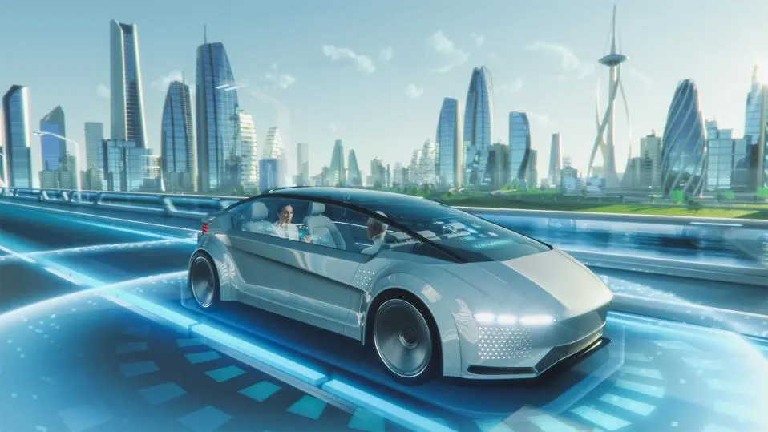

Future of Cars!
In the past few years automakers, and everyone in the automotive ecosystem — from component manufacturers to design engineers to marketing and finance executives to investors, dealers, and customers - have been confronted with massive change.

Visions of flying cars driving through futuristic cities may seem like the backdrop to every sci-fi film, but the future is a lot closer than you think. In fact, the future of cars is already a work in progress. While you may not see hovering vehicles on the streets anytime soon, you will see other impressive feats of mobility technology. From autonomous-driving cars to hydrogen fuel-cells to fully electric engines, we're already seeing a shift in the auto industry
What is the future of cars?
The cars of the future will have a number of benefits to the consumer and society as a whole. A few main advances we’ve seen in car design will allow for less pollution and more safety, connectivity and convenience. Below is a peek into what technology will be driving the cars of the future.
- Driverless Tech
- Augmented Reality CLusters
- EVs and Hybrids
- *new* Water Powered - Hydro
- Heads-up Displays
- Futuristic and Advanced infotainment systems
- New levels of ADAS